![Contrastive Learning for Unpaired Image-to-Image Translation[2007.15651]](assets/slides/v001/0001.jpg)
内容生成 · v001
Contrastive Learning for Unpaired Image-to-Image Translation[2007.15651]
17 分钟 · 32 张画面 · 8,247 字符
PAPER READING COLLECTION
完整语音转写与 PPT 画面按时间对齐。保留推导、例子和实验，一边读讲解，一边看原文。
257 篇
内容生成 · v001
17 分钟 · 32 张画面 · 8,247 字符

内容生成 · v002
8 分钟 · 18 张画面 · 3,360 字符
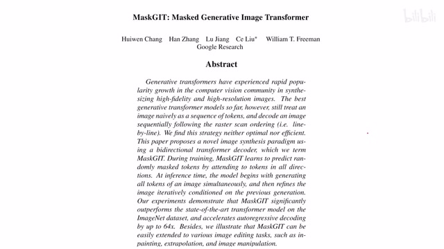

内容生成 · v004
14 分钟 · 43 张画面 · 7,221 字符
![Multimodal Unsupervised Image-to-Image Translation[1804.04732]](assets/slides/v005/0001.jpg)
![Regularized Vector Quantization for Tokenized Image Synthesis[2303.06424]](assets/slides/v006/0001.jpg)
内容生成 · v006
9 分钟 · 23 张画面 · 4,274 字符
![RetinaGAN An Object-aware Approach to Sim-to-Real Transfer[2011.03148]](assets/slides/v007/0001.jpg)
内容生成 · v007
11 分钟 · 32 张画面 · 5,207 字符
![Unsupervised Image-to-Image Translation Networks[1703.00848]](assets/slides/v008/0001.jpg)
![VQ-VAENeural discrete representation learning[1711.00937]](assets/slides/v009/0001.jpg)

内容生成 · v010
28 分钟 · 32 张画面 · 12,826 字符
![Autoregressive Image Generation using Residual Quantization[2203.01941]](assets/slides/v011/0001.jpg)
内容生成 · v011
21 分钟 · 44 张画面 · 9,742 字符
![Denoising Diffusion Implicit Models DDIM[2010.02502]](assets/slides/v012/0001.jpg)
![Denoising Diffusion Probabilistic Models DDPM[2006.11239]](assets/slides/v013/0001.jpg)

内容生成 · v014
10 分钟 · 27 张画面 · 4,636 字符
![FreeU Free Lunch in Diffusion U-Net[2309.11497]](assets/slides/v015/0001.jpg)
![Personalizing Text2Img Generation using Textual Inversion[2208.01618]](assets/slides/v016/0001.jpg)
内容生成 · v016
5 分钟 · 8 张画面 · 2,095 字符
![Rethinking the Truly Unsupervised Image-to-Image Translation[2006.06500]](assets/slides/v017/0001.jpg)
内容生成 · v017
10 分钟 · 43 张画面 · 5,491 字符
![Structured Denoising Diffusion Models in Discrete State-Spaces[2107.03006]](assets/slides/v018/0001.jpg)
内容生成 · v018
19 分钟 · 65 张画面 · 7,886 字符
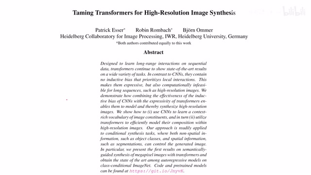
内容生成 · v019
6 分钟 · 27 张画面 · 3,028 字符

多模态语言模型 · v020
6 分钟 · 8 张画面 · 2,714 字符

多模态语言模型 · v021
9 分钟 · 20 张画面 · 4,167 字符

多模态语言模型 · v022
9 分钟 · 35 张画面 · 4,452 字符
![GroupViT Semantic Segmentation Emerges from Text Supervision[2202.11094]](assets/slides/v023/0001.jpg)
多模态语言模型 · v023
11 分钟 · 20 张画面 · 5,440 字符
![Improving fine-grained understanding in image-text pre-training[2401.0986]](assets/slides/v024/0001.jpg)
多模态语言模型 · v024
18 分钟 · 47 张画面 · 7,075 字符
![LLaVA Visual Instruction Tuning[2304.08485]](assets/slides/v025/0001.jpg)
![Large Language Models as General Pattern Machines[2307.04721]](assets/slides/v026/0001.jpg)
多模态语言模型 · v026
16 分钟 · 30 张画面 · 6,888 字符

多模态语言模型 · v027
5 分钟 · 7 张画面 · 2,158 字符
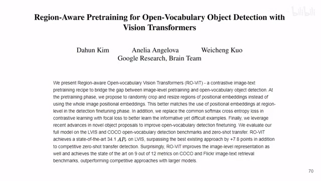
多模态语言模型 · v028
8 分钟 · 29 张画面 · 3,919 字符

多模态语言模型 · v029
14 分钟 · 39 张画面 · 5,902 字符
![TAN Temporal Alignment Networks for Long-term Video[2204.02968]](assets/slides/v030/0001.jpg)
多模态语言模型 · v030
16 分钟 · 26 张画面 · 6,880 字符
![Toolformer Language Models Can Teach Themselves to Use Tools[2302.04761]](assets/slides/v031/0001.jpg)
多模态语言模型 · v031
13 分钟 · 30 张画面 · 5,173 字符
![VATT Video-Audio-Text Transformer[2104.11178]](assets/slides/v032/0001.jpg)

多模态语言模型 · v033
13 分钟 · 45 张画面 · 5,913 字符
![A Simple LLM Framework for Long-Range Video Question-Answering[2312.17235]](assets/slides/v034/0001.jpg)
多模态语言模型 · v034
12 分钟 · 24 张画面 · 4,169 字符

多模态语言模型 · v035
13 分钟 · 42 张画面 · 6,678 字符

多模态语言模型 · v036
14 分钟 · 35 张画面 · 7,324 字符

多模态语言模型 · v037
11 分钟 · 21 张画面 · 5,751 字符
![CRG Improving Grounding in VLM wo training[2403.02325]](assets/slides/v038/0001.jpg)
![Ferret Refer and Ground Anything Anywhere at Any Granularity[2310.07704]](assets/slides/v039/0001.jpg)
多模态语言模型 · v039
10 分钟 · 65 张画面 · 4,160 字符

多模态语言模型 · v040
9 分钟 · 28 张画面 · 4,234 字符


多模态语言模型 · v042
4 分钟 · 8 张画面 · 1,988 字符

多模态语言模型 · v043
7 分钟 · 14 张画面 · 3,403 字符
![LongLoRA Efficient Fine-tuning of Long-Context LLMs[2309.12307]](assets/slides/v044/0001.jpg)
多模态语言模型 · v044
5 分钟 · 9 张画面 · 2,381 字符
![OWL-ViT Simple Open-Vocabulary Object Detection with ViT[2205.06230]](assets/slides/v045/0001.jpg)
多模态语言模型 · v045
8 分钟 · 29 张画面 · 3,965 字符
![Socratic Models Zero-Shot Multimodal Reasoning[2204.00598]](assets/slides/v046/0001.jpg)
![VLMs are Zero-Shot Reward Models for RL[2310.12921]](assets/slides/v047/0001.jpg)
![ViperGPT Visual Inference via Python Execution for Reasoning[2303.08128]](assets/slides/v048/0001.jpg)
多模态语言模型 · v048
6 分钟 · 28 张画面 · 2,411 字符
![A Laplacian Pyramid Translation Network[2105.09188]](assets/slides/v049/0001.jpg)
![BEVT BERT Pretraining of Video Transformers[2112.01529]](assets/slides/v050/0001.jpg)
![BiFormer Vision Transformer with Bi-Level Routing Attention[2303.08810]](assets/slides/v051/0001.jpg)
新模型 · v051
7 分钟 · 17 张画面 · 3,433 字符
![CeiT Incorporating Convolution Designs into Visual Tr[2103.11816]](assets/slides/v052/0001.jpg)
![DAT Vision Transformer with Deformable Attention[2201.00520]](assets/slides/v053/0001.jpg)

新模型 · v054
16 分钟 · 39 张画面 · 7,086 字符
![DeepLab V3V3+[1706.055871802.02611]](assets/slides/v055/0001.jpg)
![DeiT Data-efficient Image Transformers[2012.12877]](assets/slides/v056/0001.jpg)
![Dynamic Vision Transformers with Adaptive Sequence Length[2105.15075]](assets/slides/v057/0001.jpg)
新模型 · v057
12 分钟 · 33 张画面 · 5,780 字符
![EfficientNet V1V2[1905.119462104.00298]](assets/slides/v058/0001.jpg)
![Exploring Self-attention for Image Recognition[2004.13621]](assets/slides/v059/0001.jpg)
![FlowNet3D Learning Scene Flow in 3D Point Clouds[1806.01411]](assets/slides/v060/0001.jpg)
![Is Space-Time Attention All You Need for Video Understanding[2102.05095]](assets/slides/v061/0001.jpg)
新模型 · v061
5 分钟 · 16 张画面 · 2,410 字符
![MLP-Mixer An all-MLP Architecture for Vision[2105.01601]](assets/slides/v062/0001.jpg)
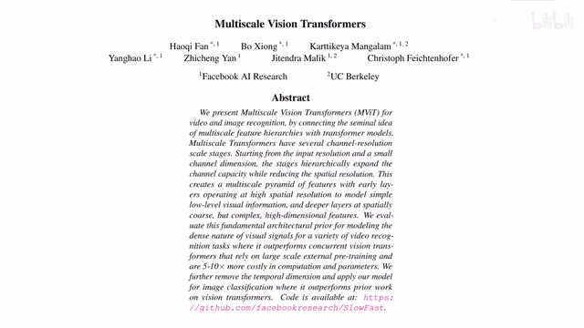
![MnasNet Platform-Aware Neural Architecture Search for Mobile[1807.11626]](assets/slides/v064/0001.jpg)
新模型 · v064
8 分钟 · 27 张画面 · 3,606 字符
![Mobile-Former Bridging MobileNet and Transformer[2108.05895]](assets/slides/v065/0001.jpg)
![MobileNet V2 Inverted Residuals and Linear Bottlenecks[1801.04381]](assets/slides/v066/0001.jpg)
新模型 · v066
10 分钟 · 25 张画面 · 4,526 字符
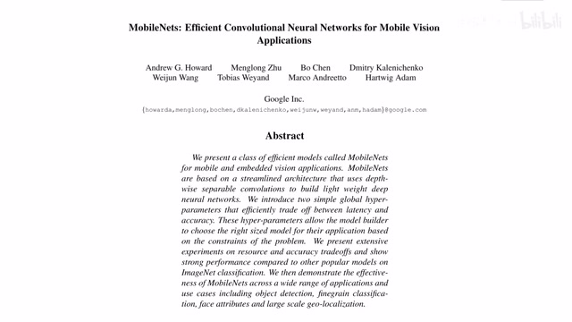
新模型 · v067
6 分钟 · 14 张画面 · 2,706 字符
![NAT Neighborhood Attention Transformer[2204.07143]](assets/slides/v068/0001.jpg)
![NeRF in the Wild NeRF for Unconstrained Photo Collections[2008.02268]](assets/slides/v069/0001.jpg)
新模型 · v069
17 分钟 · 35 张画面 · 6,811 字符
![NeRV Neural Representations for Videos[2110.13903]](assets/slides/v070/0001.jpg)
![Per-Pixel Classification is Not All You Need for Semantic Seg[2107.06278]](assets/slides/v071/0001.jpg)
新模型 · v071
10 分钟 · 45 张画面 · 4,742 字符
![Point Transformer V2[2210.05666]](assets/slides/v072/0001.jpg)
![Point Transformer[2012.09164]](assets/slides/v073/0001.jpg)
![Searching for MobileNet V3[1905.02244]](assets/slides/v074/0001.jpg)
![SlowFast Networks for Video Recognition[1812.03982]](assets/slides/v075/0001.jpg)
![TNT Transformer in Transformer[2103.00112]](assets/slides/v076/0001.jpg)
![TokenLearner What Can 8 Learned Tokens Do for Images and vids[2106.11297]](assets/slides/v077/0001.jpg)
新模型 · v077
11 分钟 · 37 张画面 · 5,384 字符
![Tokens-to-Token ViT Training ViT from Scratch on ImageNet[2101.11986]](assets/slides/v078/0001.jpg)
新模型 · v078
4 分钟 · 8 张画面 · 1,924 字符

新模型 · v079
6 分钟 · 32 张画面 · 3,212 字符
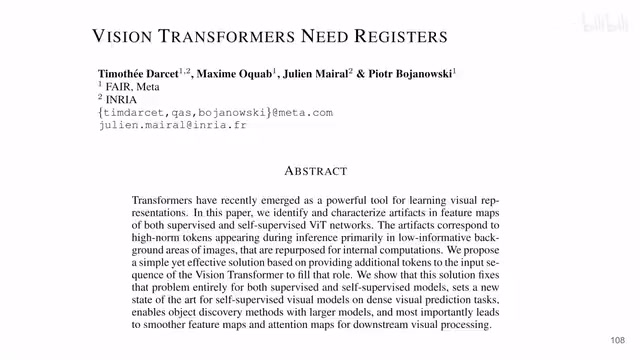
![When Shift Operation Meets Vision Transformer[2201.10801]](assets/slides/v081/0001.jpg)
![X3D Expanding Architectures for Efficient Video Recognition[2004.04730]](assets/slides/v082/0001.jpg)
新模型 · v082
4 分钟 · 15 张画面 · 1,811 字符
![XCiT Cross-Covariance Image Transformers[2106.09681]](assets/slides/v083/0001.jpg)
![Aggregating Nested Transformers[2105.12723]](assets/slides/v084/0001.jpg)
![Bottleneck Transformers for Visual Recognition[2101.11605]](assets/slides/v085/0001.jpg)
![Deformable Convolutional Networks; DCN[1703.06211]](assets/slides/v086/0001.jpg)
![EViT Expediting Vision Transformers via Token Reorganizations[2202.07800]](assets/slides/v087/0001.jpg)
新模型 · v087
4 分钟 · 14 张画面 · 2,131 字符
![Masked-attention Mask Tr. for Universal Image Segmentation[2112.01527]](assets/slides/v088/0001.jpg)
新模型 · v088
8 分钟 · 40 张画面 · 4,048 字符
![RetNet A Successor to Transformer for Large Language Models[2307.08621]](assets/slides/v089/0001.jpg)
新模型 · v089
25 分钟 · 105 张画面 · 11,445 字符
![Token Turing Machines[2211.09119]](assets/slides/v090/0001.jpg)
![iFormer Inception Transformer[2205.12956]](assets/slides/v091/0001.jpg)
![Efficient Action Tokenization for Vision-Language-Action Models[2501.09747]](assets/slides/v092/0001.jpg)
机器人学 · v092
15 分钟 · 89 张画面 · 5,795 字符


![A Framework for Efficient Robotic Manipulation[2012.07975]](assets/slides/v095/0001.jpg)
![BCO Behavioral Cloning from Observation[1805.01954]](assets/slides/v096/0001.jpg)
![Behavior From the Void Unsupervised Active Pre-Training[2103.04551]](assets/slides/v097/0001.jpg)
机器人学 · v097
9 分钟 · 26 张画面 · 4,333 字符

机器人学 · v098
24 分钟 · 47 张画面 · 11,012 字符
![CURL[2004.04136]](assets/slides/v099/0001.jpg)

机器人学 · v100
6 分钟 · 17 张画面 · 3,418 字符

机器人学 · v101
10 分钟 · 19 张画面 · 4,985 字符
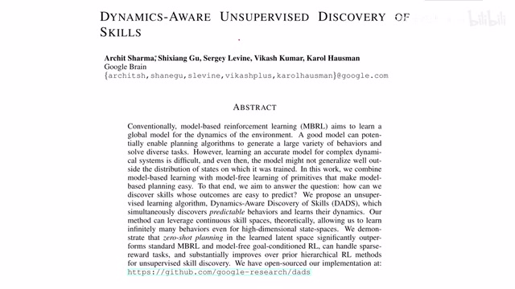
机器人学 · v102
21 分钟 · 40 张画面 · 8,877 字符
![DrQ Data regularized Q[2004.13649]](assets/slides/v103/0001.jpg)

机器人学 · v104
9 分钟 · 86 张画面 · 4,134 字符
![Dreamer V2[2010.02193]](assets/slides/v105/0001.jpg)
![Efficient Transformers in RL using Actor-Learner Distillation[2104.01655]](assets/slides/v106/0001.jpg)
机器人学 · v106
7 分钟 · 20 张画面 · 3,469 字符
![Learning Invariant Representations for RL without Reconstructi[2006.10742]](assets/slides/v107/0001.jpg)
机器人学 · v107
15 分钟 · 25 张画面 · 7,238 字符
![Neuroevolution of Self-interpretable Agents[2003.08165]](assets/slides/v108/0001.jpg)
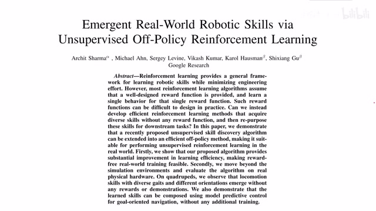
机器人学 · v109
10 分钟 · 28 张画面 · 4,422 字符
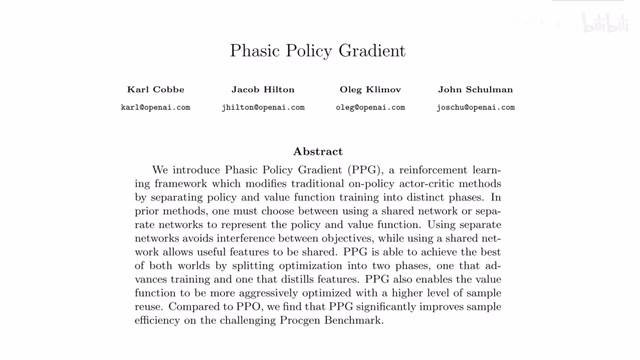
![QT-Opt Scalable Deep RL for Vision-Based Robotic Manipulation[1806.10293]](assets/slides/v111/0001.jpg)
机器人学 · v111
14 分钟 · 33 张画面 · 5,490 字符
![RL-CycleGAN Reinforcement Learning Aware Simulation-To-Real[2006.09001]](assets/slides/v112/0001.jpg)
机器人学 · v112
14 分钟 · 26 张画面 · 6,692 字符
![RainbowCombining Improvements in Deep Reinforcement Learning[1710.02298]](assets/slides/v113/0001.jpg)
机器人学 · v113
28 分钟 · 53 张画面 · 12,888 字符
![Reinforcement Learning with Augmented Data RAD[2004.14990]](assets/slides/v114/0001.jpg)
![SAC Soft Actor-Critic Part 1[1801.01290]](assets/slides/v115/0001.jpg)
![SAC Soft Actor-Critic Part 2[1812.05905]](assets/slides/v116/0001.jpg)
![SEER Stored Embeddings for Efficient RL[2103.02886]](assets/slides/v117/0001.jpg)
![SPR Data-Efficient RL with Self-Predictive Representations[2007.05929]](assets/slides/v118/0001.jpg)
机器人学 · v118
8 分钟 · 17 张画面 · 3,719 字符
![Stabilizing transformers for reinforcement learning[1910.06764]](assets/slides/v119/0001.jpg)
![The Dormant Neuron Phenomenon in Deep Reinforcement Learning[2302.12902]](assets/slides/v120/0001.jpg)
机器人学 · v120
14 分钟 · 14 张画面 · 4,950 字符
![Time-Contrastive NetworksSelf-Supervised Learning from Video[1704.06888]](assets/slides/v121/0001.jpg)
机器人学 · v121
13 分钟 · 16 张画面 · 5,022 字符
![Transformers are Sample Efficient World Models[2209.00588]](assets/slides/v122/0001.jpg)

机器人学 · v123
10 分钟 · 51 张画面 · 4,972 字符
![Visionary Vision architecture discovery for robot learning[2103.14633]](assets/slides/v124/0001.jpg)
机器人学 · v124
11 分钟 · 35 张画面 · 4,671 字符
![World Models[1803.10122]](assets/slides/v125/0001.jpg)
![XSkill Cross Embodiment Skill Discovery[2307.09955]](assets/slides/v126/0001.jpg)
![A Self-Improving Generalist Agent for Robotic Manipulation[2306.11706]](assets/slides/v127/0001.jpg)
机器人学 · v127
12 分钟 · 37 张画面 · 5,122 字符
![DDPG&TD3[1509.02971][1802.09477]](assets/slides/v128/0001.jpg)
![Decision Transformer RL via Sequence Modeling[2106.01345]](assets/slides/v129/0001.jpg)
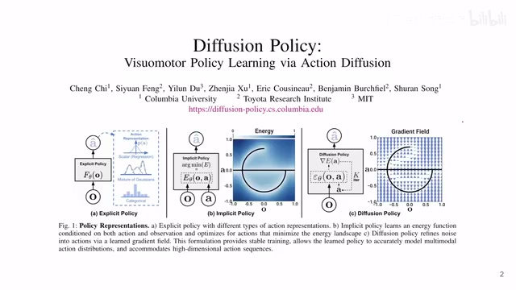
机器人学 · v130
6 分钟 · 12 张画面 · 2,911 字符
![GENIMA Generative Image as Action Models[2407.07875]](assets/slides/v131/0001.jpg)
![Implicit Behavioral Cloning IBC[2109.00137]](assets/slides/v132/0001.jpg)
![LLaRA Supercharging Robot Learning Data for VLM Policy[2406.20095]](assets/slides/v133/0001.jpg)
机器人学 · v133
15 分钟 · 205 张画面 · 6,457 字符
![Latent Action Pretraining from Videos[2410.11758]](assets/slides/v134/0001.jpg)
![Mask-based Latent Reconstruction for Reinforcement Learning[2201.12096]](assets/slides/v135/0001.jpg)
机器人学 · v135
5 分钟 · 16 张画面 · 2,743 字符
![NeRF-RL Reinforcement Learning with Neural Radiance Fields[2206.01634]](assets/slides/v136/0001.jpg)
机器人学 · v136
10 分钟 · 37 张画面 · 4,912 字符
![OpenVLA An Open-Source Vision-Language-Action Model[2406.09246]](assets/slides/v137/0001.jpg)
![Self-Supervised Policy Adaptation during Deployment[2007.04309]](assets/slides/v138/0001.jpg)

机器人学 · v139
4 分钟 · 11 张画面 · 1,883 字符
![Synthetic Experience Replay[2303.06614]](assets/slides/v140/0001.jpg)
![VRL3 A Data-Driven Framework for Visual Deep Reinforcement L.[2202.10324]](assets/slides/v141/0001.jpg)
机器人学 · v141
6 分钟 · 11 张画面 · 2,682 字符

机器人学 · v142
25 分钟 · 148 张画面 · 11,461 字符


![An Empirical Study of Training Self-Supervised ViT[2104.02057]](assets/slides/v150/0001.jpg)
![BYOL Bootstrap Your Own Latent[2006.07733]](assets/slides/v151/0001.jpg)
![Barlow TwinsSelf-Supervised Learning via Redundancy Reduction[2103.03230]](assets/slides/v152/0001.jpg)
表征学习 · v152
6 分钟 · 21 张画面 · 2,543 字符
![Big Self-Supervised Models are Strong Semi-Supervised Learners[2006.10029]](assets/slides/v153/0001.jpg)
表征学习 · v153
7 分钟 · 19 张画面 · 2,974 字符
![Broaden Your Views for Self-Supervised Video Learning[2103.16559]](assets/slides/v154/0001.jpg)
表征学习 · v154
8 分钟 · 35 张画面 · 3,692 字符
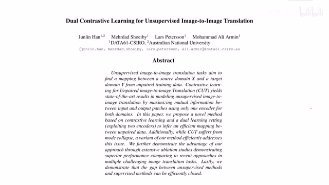
![DINO Emerging Properties in SelfSupervised Vision Transformers[2104.14294]](assets/slides/v156/0001.jpg)
表征学习 · v156
10 分钟 · 23 张画面 · 5,255 字符
![Deconstructing Denoising Diffusion Models for SSL[2401.14404]](assets/slides/v157/0001.jpg)
![Directional SSL for Heavy Image Augmentations[2110.13555]](assets/slides/v158/0001.jpg)
![DropPos Pre-Training ViTs by Reconstructing Dropped Positions[2309.03576]](assets/slides/v159/0001.jpg)
表征学习 · v159
6 分钟 · 9 张画面 · 2,996 字符
![Energy-Inspired Self-Supervised Pretraining for Vision Models[2302.01384]](assets/slides/v160/0001.jpg)
表征学习 · v160
11 分钟 · 38 张画面 · 4,677 字符
![Equivariant Contrastive Learning[2111.00899]](assets/slides/v161/0001.jpg)
![Evolving Losses for Unsupervised Video Representation Learning[2002.12177]](assets/slides/v162/0001.jpg)
表征学习 · v162
19 分钟 · 41 张画面 · 8,008 字符

表征学习 · v163
5 分钟 · 13 张画面 · 2,528 字符

表征学习 · v164
14 分钟 · 32 张画面 · 6,661 字符

表征学习 · v165
13 分钟 · 26 张画面 · 6,153 字符

表征学习 · v166
20 分钟 · 64 张画面 · 8,404 字符
![Learning by Aligning Videos in Time[2103.17260]](assets/slides/v167/0001.jpg)
![Leveraging BG AUG to encourage semantic focus in SSCL[2103.12719]](assets/slides/v168/0001.jpg)
表征学习 · v168
5 分钟 · 10 张画面 · 1,611 字符
![Location-Aware Self-Supervised Transformers for Semantic Seg.[2212.02400]](assets/slides/v169/0001.jpg)
表征学习 · v169
12 分钟 · 23 张画面 · 5,927 字符
![MONet Unsupervised Scene Decomposition and Representation[1901.11390]](assets/slides/v170/0001.jpg)
表征学习 · v170
14 分钟 · 40 张画面 · 5,936 字符
![MixMAE & Mixed AE[2205.13137][2303.17152]](assets/slides/v171/0001.jpg)
![MoCo Momentum Contrast Learning[1911.057222003.04297]](assets/slides/v172/0001.jpg)
![Object-Centric Learning with Slot Attention[2006.15055]](assets/slides/v173/0001.jpg)
![Probabilistic Representations for Video Contrastive Learning[2204.03946]](assets/slides/v174/0001.jpg)
表征学习 · v174
15 分钟 · 27 张画面 · 7,124 字符

表征学习 · v175
8 分钟 · 16 张画面 · 3,425 字符

表征学习 · v176
8 分钟 · 16 张画面 · 3,622 字符
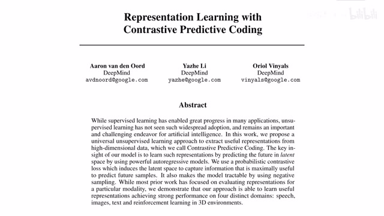
表征学习 · v177
17 分钟 · 27 张画面 · 7,447 字符
![Rethinking Pre-training and Self-training[2006.06882]](assets/slides/v178/0001.jpg)
![SimCLR A simple framework for contrastive learning[2002.05709]](assets/slides/v179/0001.jpg)
![SimSiam Exploring Simple Siamese Representation Learning[2011.10566]](assets/slides/v180/0001.jpg)
表征学习 · v180
9 分钟 · 39 张画面 · 3,634 字符
![SwAV Swapping Assignments between multiple Views[2006.09882]](assets/slides/v181/0001.jpg)
![Towards Better Understanding of Self-Supervised Representation[2203.01881]](assets/slides/v182/0001.jpg)
表征学习 · v182
8 分钟 · 25 张画面 · 3,833 字符

表征学习 · v183
14 分钟 · 22 张画面 · 6,640 字符
![Transf. Meta-learners for Implicit Neural Representations[2208.02801]](assets/slides/v184/0001.jpg)
表征学习 · v184
10 分钟 · 22 张画面 · 4,379 字符

表征学习 · v185
11 分钟 · 25 张画面 · 4,792 字符
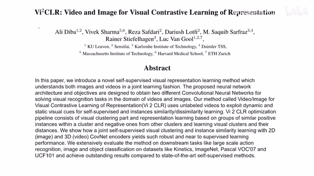
表征学习 · v186
9 分钟 · 23 张画面 · 4,539 字符

表征学习 · v187
7 分钟 · 22 张画面 · 3,019 字符
![Wasserstein Contrastive Representation Distillation WCoRD[2012.08674]](assets/slides/v188/0001.jpg)
表征学习 · v188
20 分钟 · 43 张画面 · 9,047 字符

表征学习 · v189
13 分钟 · 30 张画面 · 5,704 字符
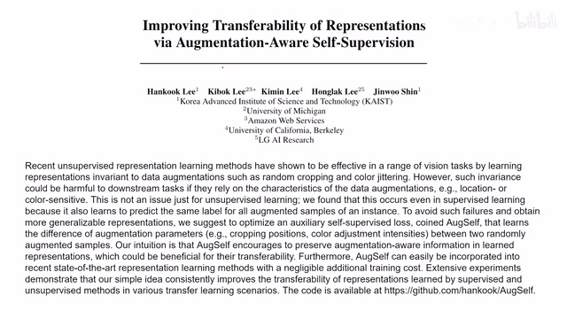
表征学习 · v190
4 分钟 · 17 张画面 · 1,910 字符
![Data-Efficient Image Recog with Contrastive Predictive Coding[1905.09272]](assets/slides/v191/0001.jpg)
表征学习 · v191
6 分钟 · 13 张画面 · 2,571 字符
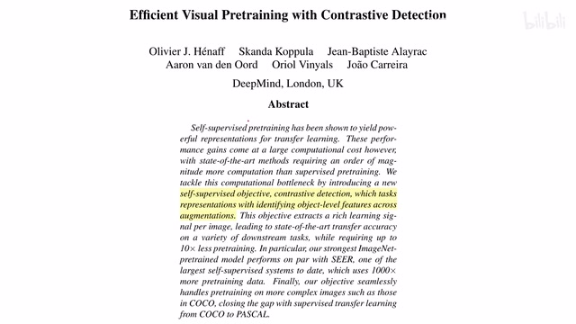
表征学习 · v192
4 分钟 · 15 张画面 · 2,174 字符
![Finite Scalar Quantization VQ-VAE Made Simple[2309.15505]](assets/slides/v193/0001.jpg)
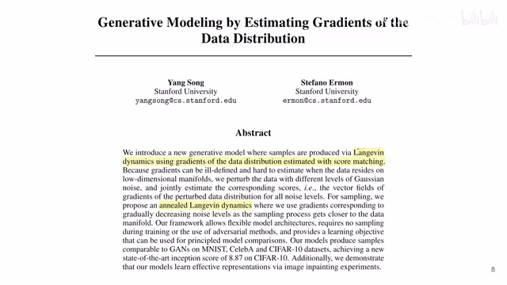
表征学习 · v194
18 分钟 · 43 张画面 · 7,439 字符

表征学习 · v195
10 分钟 · 33 张画面 · 4,796 字符
![Jigsaw Clustering for Unsupervised Visual Representation Learn[2104.00323]](assets/slides/v196/0001.jpg)
表征学习 · v196
6 分钟 · 16 张画面 · 2,495 字符

表征学习 · v197
6 分钟 · 29 张画面 · 3,146 字符
![Masked Feature Prediction .Self-Supervised Visual Pre-Training[2112.09133]](assets/slides/v198/0001.jpg)
表征学习 · v198
5 分钟 · 14 张画面 · 2,421 字符

表征学习 · v199
15 分钟 · 37 张画面 · 6,359 字符

表征学习 · v200
6 分钟 · 35 张画面 · 2,520 字符
![Object Discovery and Representation Networks[2203.08777]](assets/slides/v201/0001.jpg)
![SODA Bottleneck Diffusion Models for Representation Learning[2311.17901]](assets/slides/v202/0001.jpg)
表征学习 · v202
14 分钟 · 22 张画面 · 6,479 字符
![SS Video Representation Learning by Context&Motion Decoupling[2104.00862]](assets/slides/v203/0001.jpg)
表征学习 · v203
8 分钟 · 19 张画面 · 3,794 字符
![Self-supervised Video Transformer[2112.01514]](assets/slides/v204/0001.jpg)
![Solving Inefficiency of Self-supervised Representation Learning[2104.0876]](assets/slides/v205/0001.jpg)
表征学习 · v205
6 分钟 · 16 张画面 · 2,964 字符

表征学习 · v206
8 分钟 · 119 张画面 · 3,846 字符
![Video Rep. Learning by Recognizing Temporal Transformations[2007.10730]](assets/slides/v207/0001.jpg)
表征学习 · v207
7 分钟 · 36 张画面 · 2,709 字符
![iBOT Image BERT Pre-Training with Online Tokenizer[2111.07832]](assets/slides/v208/0001.jpg)


没有找到匹配的论文，试试其他关键词。